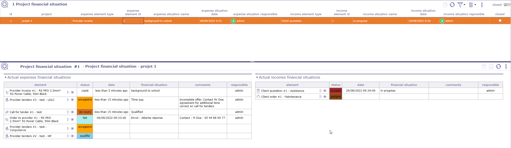
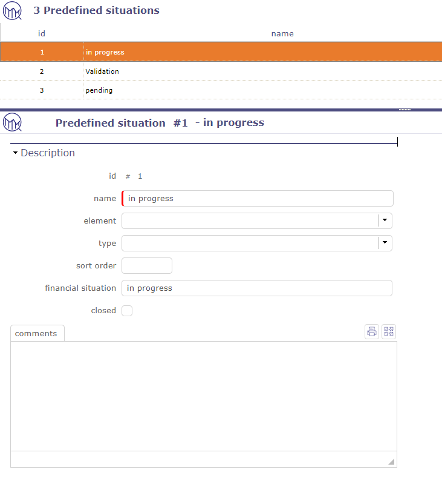
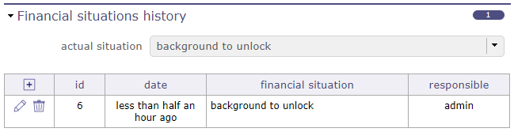
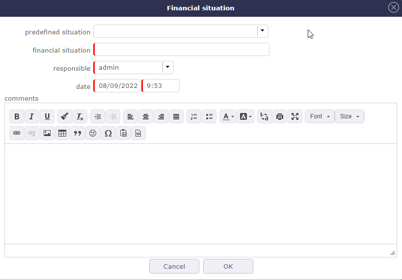
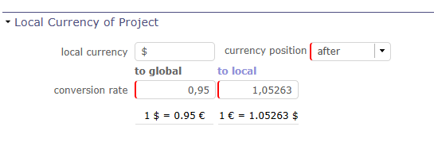

Situation financière¶
Les écrans de situation financière vous permettent de suivre précisément, avec vos propres étapes, tous les éléments financiers d’un projet.

Écran de situation financière du projet¶
Retrouvez la situation financière dans son intégralité sur les écrans respectifs des éléments.
Les écrans de statut financier n’afficheront que la transaction la plus récente.
Situations financières du projet¶
Sur cet écran, vous visualisez tous les documents financiers liés à vos projets. Pour afficher une situation, vous devez les créer directement sur l’écran du document concerné. Il est possible de prédéfinir des situations financières.
La zone de liste affiche le dernier document financier traité. La zone de détail affiche tous les documents financiers de dépenses et de recettes dans leur état actuel.
Vous pouvez afficher uniquement la situation financière des dépenses ou la situation financière des recettes sur leurs écrans respectifs.
Situation financière des dépenses¶
Les opérations suivantes seront alors affichées pour les dépenses.
Appel d’offres.
Offres fournisseur
Commandes au fournisseur
Factures fournisseur
Situation financière des recettes¶
Les opérations suivantes seront alors affichées pour les recettes.
Devis clients
Commandes clients
Factures clients
Paiements clients
Situation prédéfinie¶
Vous créez plusieurs situations définies que vous pourrez utiliser pour définir des situations sur les éléments financiers.
Cliquez sur  pour ajouter une nouvelle situation prédéfinie
pour ajouter une nouvelle situation prédéfinie

Situation prédéfinie¶
Vous pouvez limiter la situation prédéfinie à un élément ou à un type d’élément.
Situation financière¶
Cliquez sur  pour créer un état financier sur un document financier éligible.
pour créer un état financier sur un document financier éligible.

Section situation financière¶
Si vous avez créé des situations prédéfinies, vous pouvez les choisir dans la liste déroulante correspondante.
Si vous n’avez pas de situations prédéfinies, renseignez alors la situation directement manuellement, en respectant les champs obligatoires.

Fenêtre contextuelle de situation financière¶
Multi-devise¶
Il est possible de définir une devise locale pour chaque projet.
Le projet porte le taux de conversion entre la devise globale et la devise locale.

multi-devise dans le projet¶
Vous devez activer le paramètre pour pouvoir utiliser la fonctionnalité.
Voir aussi
multi-devise dans les paramètres globaux.
Les champs existants sont considérés dans la devise globale.
Un montant saisi en devise locale est automatiquement converti et stocké en devise globale.
Les sous-projets d’un projet ont toujours la même devise et le même taux de conversion que le parent.
Les données monétaires des sous-projets sont toujours consolidées dans la devise globale.
Si un projet a une devise locale, les données monétaires de ses sous-projets sont consolidées sans se préoccuper du taux de conversion, car les sous-projets ont nécessairement la même devise et le même taux de conversion.
Si un projet n’a pas de devise locale, nous n’essayons pas de consolider les données monétaires de ses sous-projets en devise locale.
Un élément portant des données monétaires ne peut pas changer de projet si les projets source et destination n’ont pas la même devise et le même taux de conversion.
Important
Les rapports existants seront tous produits dans la devise globale.
Factur-X¶
Factur-X est un format de facturation électronique hybride qui combine un fichier PDF lisible par l’homme avec un fichier XML structuré pouvant être traité automatiquement par les systèmes d’information.
Dans ProjeQtOr, les factures peuvent être importées et exportées au format Factur-X. Cela vous permet de conserver une version visuelle standard de la facture tout en permettant une intégration transparente avec d’autres systèmes (logiciel de comptabilité, ERP, archivage électronique) sans saisie manuelle.
Cette fonctionnalité améliore la fiabilité des données, améliore la traçabilité et contribue à assurer la conformité avec les réglementations de facturation électronique.